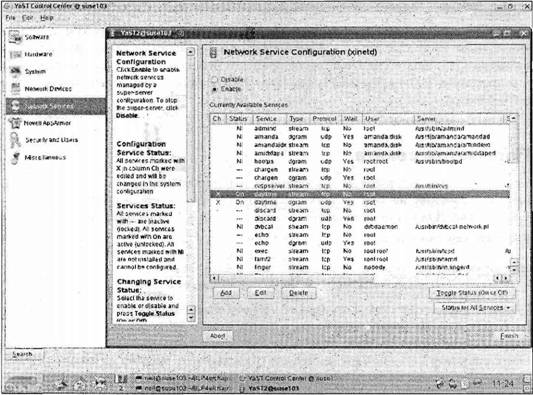

|
||||||||||||||||||||||||||||||||||||||||||||||||||||||||||||||||||||||
|
|
Глава 15Сокеты В этой главе вы познакомитесь с еще одним способом взаимодействия процессов, существенно отличающимся от тех, которые мы обсуждали в главах 13 и 14. До настоящего момента все рассматриваемые нами средства основывались на совместно используемых ресурсах одного компьютера. Ресурсы могли быть разными: областью файловой системы, сегментами совместно используемой памяти или очередями сообщений, но использовать их могли только процессы, выполняющиеся на одной машине. В версию ОС Berkeley UNIX было включено новое средство коммуникации — интерфейс сокетов, — являющееся расширением концепции канала, обсуждавшейся в главе 13. В системах Linux также есть интерфейсы сокетов. Вы можете применять сокеты во многом так же, как каналы, но они поддерживают взаимодействие в пределах компьютерной сети. Процесс на одной машине может использовать сокеты для взаимосвязи с процессом на другом компьютере, что делает возможным существование клиент-серверных систем, распределенных в сети. Процессы, выполняющиеся на одной машине, также могут применять сокеты. Кроме того, интерфейс сокетов стал доступен в ОС Windows благодаря общедоступной спецификации Windows Sockets или WinSock. Сервисы сокетов в ОС Windows предоставляются системным файлом Winsock.dll. Стало быть, программы под управлением Windows могут взаимодействовать по сети с компьютерами под управлением Linux и UNIX и наоборот, реализуя, таким образом, клиент-серверные системы. Несмотря на то, что программный интерфейс для WinSock не совпадает полностью с интерфейсом сокетов в UNIX, в основе его лежат те же сокеты. В одной-единственной главе мы не сможем дать исчерпывающее описание всех многообразных сетевых возможностей Linux, поэтому вы найдете здесь лишь основные программные сетевые интерфейсы, которые позволят вам писать собственные программы, работающие в сети. Более подробно мы рассмотрим следующие темы: □ как действует соединение с помощью сокетов; □ атрибуты сокетов, адреса и обмен информацией; □ сетевая информация и интернет-демон (inetd/xinetd); □ клиенты и серверы. Что такое сокет?Сокет — это средство связи, позволяющее разрабатывать клиент-серверные системы для локального, на одной машине, или сетевого использования. Функции ОС Linux, такие как вывод, подключение к базам данных и обслуживание Web-страниц, равно как и сетевые утилиты, например rlogin, предназначенная для удаленной регистрации, и ftp, применяемая для передачи файлов, обычно используют сокеты для обмена данными. Сокеты создаются и используются не так, как каналы, потому что они подчеркивают явное отличие между клиентом и сервером. Механизм сокетов позволяет создавать множество клиентов, присоединенных к единственному серверу. Соединения на базе сокетовСоединения на базе сокетов можно рассматривать как телефонные звонки в учреждение. Телефонный звонок поступает в организацию, и на него отвечает секретарь приемной, направляющий вызов в соответствующий отдел (серверный процесс) и оттуда к нужному сотруднику (сокет сервера). Каждый входящий телефонный звонок (клиент) направляется к соответствующей конечной точке, и промежуточные операторы могут заниматься последующими телефонными звонками. Прежде чем рассматривать установку соединений с помощью сокетов в системах Linux, нужно понять, как они ведут себя в приложениях сокетов, поддерживающих соединения. Сначала серверное приложение создает сокет, который как файловый дескриптор представляет собой ресурс, присваиваемый единственному серверному процессу. Сервер создает его с помощью системного вызова socket, и этот сокет не может использоваться совместно с другими процессами. Далее сервер присваивает сокету имя. Локальные сокеты с заданными именами файлов в файловой системе Linux часто размещаются в каталоге /tmp или /usr/tmp. У сетевых сокетов имя файла будет идентификатором сервиса (номер порта/точка доступа), относящегося к конкретной сети, к которой могут подключаться клиенты. Этот идентификатор, задавая определенный номер порта, соответствующий корректному серверному процессу, позволяет Linux направлять входящие подключения по определенному маршруту. Например, Web-сервер обычно создает сокет для порта 80, идентификатор, зарезервированный для этой цели. Web-обозреватели знают о необходимости применять порт 80 для своих HTTP-подключений к Web- сайтам, которые пользователь хочет читать. Именуется сокет с помощью системного вызова bind. Далее серверный процесс ждет подключения клиента к именованному сокету. Системный вызов listenформирует очередь входящих подключений. Сервер может принять их с помощью системного вызова accept. Когда сервер вызывает accept, создается новый сокет, отличающийся от именованного сокета. Этот новый сокет применяется только для взаимодействия с данным конкретным клиентом. Именованный сокет сохраняется для дальнейших подключений других клиентов. Если сервер написан корректно, он может извлечь выгоду из многочисленных подключений. Web-сервер добивается этого за счет одновременного предоставления страниц многих клиентам. В случае простого сервера все последующие клиенты ждут в очереди до тех пор, пока сервер не будет готов снова. Клиентская сторона системы с применением сокетов гораздо проще. Клиент создает неименованный сокет с помощью вызова socket. Затем он вызывает connectдля подключения к серверу, используя в качестве адреса именованный сокет сервера. Будучи установлены, сокеты могут применяться как низкоуровневые файловые дескрипторы, обеспечивая двунаправленный обмен данными. Выполните упражнения 15.1 и 15.2. Упражнение 15.1. Простой локальный клиентДалее приведен пример очень простой клиентской программы client1.с. В ней неименованный сокет создается и затем подключается к сокету сервера, названному server_socket. Системный вызов socketмы подробно рассмотрим чуть позже, когда будем обсуждать некоторые проблемы адресации. 1. Включите нужные заголовочные файлы и задайте переменные: #include <sys/types.h> #include <sys/socket.h> #include <stdio.h> #include <sys/un.h> #include <unistd.h> #include <stdlib.h> int main() { int sockfd; int len; struct sockaddr_un address; int result; char ch = 'A'; 2. Создайте сокет для клиента: sockfd = socket(AF_UNIX, SOCK_STREAM, 0); 3. Назовите сокет по согласованию с сервером: address.sun_family = AF_UNIX; strcpy(address.sun_path, "server_socket"); len = sizeof(address); 4. Соедините ваш сокет с сокетом сервера: result = connect(sockfd, (struct sockaddr *)&address, len); if (result == -1) { perror("oops : client1"); exit(1); } 5. Теперь вы можете читать и писать через sockfd: write(sockfd, &ch, 1); read(sockfd, &ch, 1); printf("char from server = %c\n", ch); close(sockfd); exit(0); } Эта программа завершится аварийно, если вы попытаетесь выполнить ее, потому что еще не создан именованный сокет сервера, (Точное сообщение об ошибке может отличаться в разных системах.) $ ./client1 oops: client1: No such file or directory $Упражнение 15.2. Простой локальный сервер Далее приведена программа простого сервера server1.с, которая принимает запрос на соединение от клиента. Она создает сокет сервера, присваивает ему имя, создает очередь ожидания и принимает запросы на соединения. 1. Включите необходимые заголовочные файлы и задайте переменные: #include <sys/types.h> #include <sys/socket.h> #include <stdio.h> #include <sys/un.h> #include <unistd.h> #include <stdlib.h> int main() { int server_sockfd, client_sockfd; int server_len, client_len; struct sockaddr_un server_address; struct sockaddr_un client_address; 2. Удалите все старые сокеты и создайте неименованный сокет для сервера: unlink("server_socket"); server_sockfd = socket(AF_UNIX, SOCK_STREAM, 0); 3. Присвойте имя сокету: server_address.sun_family = AF_UNIX; strcpy(server_address.sun_path, "server_socket"); server_len = sizeof(server_address); bind(server_sockfd, (struct sockaddr *)&server_address, server_len); 4. Создайте очередь запросов на соединение и ждите запроса клиента: listen(server_sockfd, 5); while(1) { char ch; printf("server waiting\n"); 5. Примите запрос на соединение: client_len = sizeof(client_address); client_sockfd = accept(server_sockfd, (struct sockaddr *)&client_address, &client_len); 6. Читайте и записывайте данные клиента с помощью client_sockfd: read(client_sockfd, &ch, 1); ch++; write(client_sockfd, &ch, 1); close(client_sockfd); } } Как это работает В этом примере серверная программа в каждый момент времени может обслуживать только одного клиента. Она просто читает символ, поступивший от клиента, увеличивает его и записывает обратно. В более сложных системах, где сервер должен выполнять больше работы по поручению клиента, такой подход будет неприемлемым, потому что другие клиенты не смогут подключиться до тех пор, пока сервер не завершит работу. Позже вы увидите пару методов, позволяющих подключаться многочисленным клиентам. Когда вы выполняете серверную программу, она создает сокет и ждет запросов на соединение. Если вы запустите ее в фоновом режиме, т.е. она будет выполняться независимо, вы сможете затем запускать клиентов как высокоприоритетные задачи. $ ./server1 & [1] 1094 $ server waiting Ожидая запросы на соединения, сервер выводит сообщение. В приведенном примере сервер ждет запрос с сокета файловой системы, и вы сможете увидеть его с помощью обычной команды ls. Хорошо взять за правило удалять сокет после окончания работы с ним, даже в случае аварийного завершения программы из-за получения сигнала. Это убережет файловую систему от загромождения неиспользуемыми файлами. $ ls -lF server socket srwxr-xr-x 1 neil users 0 2007-06-23 11:41 server_socket= Здесь тип устройства — сокет, на что указывает символ sперед правами доступа и символ =в конце имени. Сокет был создан как обычный файл с правами доступа, модифицированными текущей umask. Если применить команду ps, то можно увидеть сервер, выполняющийся в фоновом режиме. Он показан спящим (параметр STATравен s) и, следовательно, не потребляющим ресурсы ЦП. $ ps lх F UID PID PPID PRI NI VSZ RSS WCHAN STAT TTY TIME COMMAND 0 1000 23385 10689 17 0 1424 312 361800 S pts/1 0:00 ./server1 Теперь, когда вы запустите программу, то успешно подключитесь к серверу. Поскольку сокет сервера существует, вы можете соединиться с ним и обмениваться данными. $ ./client1 server waiting char from server = В $ На терминале вывод сервера и клиента перемешаны, но можно увидеть, что сервер получил символ от клиента, увеличил его и вернул. Далее сервер продолжает выполняться и ждет следующего клиента. Если вы запустите несколько клиентов вместе, они будут обслуживаться по очереди, хотя полученный вывод может оказаться еще более перемешанным. $ ./client1 & ./client1 & ./client1 & [2] 23412 [3] 23413 [4] 23414 server waiting char from server = В server waiting char from server = В server waiting char from server = В server waiting [2] Done client1 [3]- Done client1 [4]+ Done client1 $ Атрибуты сокетаДля того чтобы до конца понять системные вызовы, применявшиеся в рассмотренном примере, необходимо узнать кое-что об организации сети в системах UNIX. Сокеты характеризуются тремя атрибутами: доменом, типом и протоколом. У них также есть адрес, используемый как имя сокета. Форматы адресов меняются в зависимости от домена, также называемого семейством протоколов (protocol family). Каждое семейство протоколов может применять одно или несколько семейств адресов, определяющих формат адреса. Домены сокетовДомены задают сетевую рабочую среду, которую будет использовать соединение сокетов. Самый популярный домен сокетов — AF_INET, ссылающийся на сеть Интернет и применяемый во многих локальных сетях Linux и, конечно, в самом Интернете. Низкоуровневый протокол Internet Protocol (IP), у которого только одно адресное семейство, накладывает определенный способ задания компьютеров, входящих в сеть. Он называется IP-адресом. Примечание Несмотря на то, что у машин в Интернете почти всегда есть имена, их преобразуют в IP-адреса. Пример IP-адреса — 192.168.1.99. Все IP-адреса представлены четырьмя числами, каждое из которых меньше 256, и образуют так называемые четверки с точками. Когда клиент подключается по сети с помощью сокетов, ему нужен IP- адрес компьютера сервера. На компьютере сервера может быть доступно несколько сервисов. Клиент может обратиться к конкретному сервису на компьютере, включенном в сеть, с помощью IP-порта. Внутри системы порт идентифицируется уникальным 16-разрядным целым числом, а за пределами системы — комбинацией IP-адреса и номера порта. Сокеты — это коммуникационные конечные точки, которые должны быть связаны с портами, прежде чем передача данных станет возможна. Серверы ожидают запросов на соединения от определенных клиентов. У хорошо известных сервисов есть выделенные номера портов, которые используются всеми машинами под управлением ОС Linux и UNIX. Обычно, но не всегда, эти номера меньше 1024. Примерами могут служить буфер печати принтера (515), rlogin(513), ftp(21) и httpd(80). Последний из названных — стандартный порт для Web-серверов. Обычно номера портов, меньшие 1024, зарезервированы для системных сервисов и могут обслуживаться процессами с правами суперпользователя. Стандарт X/Open определяет в заголовочном файле netdb.h константу IPPORT_RESERVEDдля указания наибольшего номера зарезервированных портов. Поскольку для стандартных сервисов есть стандартный набор номеров портов, компьютеры могут легко соединяться друг с другом, не угадывая правильный номер порта. Локальный сервисы могут применять адреса нестандартных портов. Домен в первом упражнении, AF_UNIX, — это домен файловой системы UNIX, который может использоваться сокетами, находящимися на единственном компьютере, возможно, даже не входящем в сеть. Если это так, то низкоуровневый протокол — это файловый ввод/вывод, а адреса — имена файлов. Для сокета сервера применялся адрес server_socket, который, как вы видели, появлялся в текущем каталоге, когда вы выполняли серверное приложение. Кроме того, могут применяться и другие домены: AF_ISOдля сетей на основе стандартных протоколов ISO и AF_XNSдля Xerox Network System (сетевая система Xerox). В этой книге мы их не будем обсуждать. Типы сокетов У домена сокетов может быть несколько способов обмена данными, у каждого из которых могут быть разные характеристики. В случае сокетов домена AF_UNIXпроблемы не возникают, т.к, они обеспечивают надежный двунаправленный обмен данными. В сетевых доменах необходимо знать характеристики базовой сети и их влияние на различные механизмы передачи данных. Интернет-протоколы предоставляют два механизма передачи данных с разными уровнями обслуживания: потоки и дейтаграммы. Потоковые сокетыПотоковые сокеты (в чем-то подобные стандартным потокам ввода/вывода) обеспечивают соединение, представляющее собой последовательный и надежный двунаправленный поток байтов. Следовательно, гарантируется, что без указания возникшей ошибки данные не будут потеряны, продублированы или переупорядочены. Сообщения большого объема фрагментируются, передаются и снова собираются воедино. Это напоминает файловый поток, который принимает большие объемы данных и делит их на меньшие блоки для записи на физический диск. У потоковых сокетов предсказуемое поведение. Потоковые сокеты, описываемые типом SOCK_STREAM, реализованы в домене AF_INETсоединениями на базе протоколов TCP/IP. Кроме того, это обычный тип сокетов и в домене AF_UNIX. В этой главе мы сосредоточимся на сокетах типа SOCK_STREAM, поскольку они чаще всего применяются при программировании сетевых приложений. ПримечаниеДейтаграммные сокеты В отличие от потоковых дейтаграммные сокеты, описываемые типом SOCK_DGRAM, не устанавливают и не поддерживают соединение. Кроме того, существует ограничение для размера дейтаграммы, которая может отправляться. Она передается как единое сетевое сообщение, которое может быть потеряно, продублировано или прибыть несвоевременно, т.е. перед дейтаграммами, посланными после нее. Дейтаграммные сокеты реализованы в домене AF_INETс помощью соединений UDP/IP и предоставляют неупорядоченный ненадежный сервис. (UDP сокращенное название протокола User Datagram Protocol.) Однако они относительно экономичны с точки зрения расходования ресурсов, поскольку не нуждаются в поддержке сетевых соединений. Они быстры, т.к. не тратится время на установку сетевого соединения. Дейтаграммы полезны для однократных запросов к информационным сервисам, для предоставления обычных сведений о состоянии или для выполнения низкоприоритетной регистрации данных. Их преимущество в том, что остановка сервера не причинит чрезмерных неудобств клиенту и не потребует перезапуска клиента. Поскольку серверы на базе дейтаграмм обычно сохраняют данные без соединения, их можно останавливать и запускать снова, не мешая их клиентам. На этом мы закончим обсуждение дейтаграмм, дополнительную информацию см. в разд. "Дейтаграммы" в конце данной главы. Протоколы сокетовЕсли низкоуровневый механизм передачи данных позволяет применять несколько протоколов, предоставляющих сокет требуемого типа, можно выбрать конкретный протокол или сокет. В этой главе мы сосредоточимся на сокетах сети UNIX и ее файловой системы, которые не требуют от вас выбора протокола, отличного от заданного по умолчанию. Создание сокетаСистемный вызов socket создает сокет и возвращает дескриптор, который может применяться для доступа к сокету: #include <sys/types.h> #include <sys/socket.h> int socket(int domain, int type, int protocol); Созданный сокет — это одна конечная точка линии передачи. Параметр domainзадает семейство адресов, параметр typeопределяет тип используемого с этим сокетом обмена данными, a protocol— применяемый протокол. В табл. 15.1 приведены имена доменов. Таблица 15.1
К наиболее популярным доменам сокетов относятся AF_UNIX, применяемый для локальных сокетов, реализуемых средствами файловых систем UNIX и Linux, и AF_INET, используемый для сетевых сокетов UNIX. Сокеты домена AF_INETмогут применяться программами, взаимодействующими в сетях на базе протоколов TCP/IP, включая Интернет. Интерфейс ОС Windows Winsock также предоставляет доступ к этому домену сокетов. Параметр сокета type задает характеристики обмена данными, применяемые для нового сокета. Возможными значениями могут быть SOCK_STREAMи SOCK_DGRAM. □ SOCK_STREAM— это упорядоченный, надежный, основанный на соединении, двунаправленный поток байтов. В случае домена сокетов AF_INETэтот тип обмена данными по умолчанию обеспечивается TCP-соединением, которое устанавливается между двумя конечными точками потоковых сокетов при подключении. Данные могут передаваться в двух направлениях по линии связи сокетов. Протоколы TCP включают в себя средства фрагментации и последующей повторной сборки сообщений больших объемов и повторной передачи любых их частей, которые могли быть потеряны в сети. □ SOCK_DGRAM— дейтаграммный сервис. Вы можете использовать такой сокет для отправки сообщений с фиксированным (обычно небольшим) максимальным объемом, но при этом нет гарантии, что сообщение будет доставлено или что сообщения не будут переупорядочены в сети. В случае сокетов домена AF_INETэтот тип передачи данных обеспечивается дейтаграммами UDP (User Datagram Protocol, пользовательский протокол дейтаграмм). Протокол, применяемый для обмена данными, обычно определяется типом сокета и доменом. Как правило, выбора нет. Параметр protocolприменяется в тех случаях, когда выбор все же предоставляется. Задание 0 позволяет выбрать стандартный протокол, используемый во всех примерах данной главы. Системный вызов socketвозвращает дескриптор, во многом похожий на низкоуровневый файловый дескриптор. Когда сокет подключен к концевой точке другого сокета, для отправки и получения данных с помощью сокетов можно применять системные вызовы readи writeс дескриптором сокета. Системный вызов closeиспользуется для удаления сокетного соединения. Адреса сокетовКаждый домен сокетов требует своего формата адресов. В домене AF_UNIXадрес описывается структурой sockaddr_un, объявленной в заголовочном файле sys/un.h: struct sockaddr_un { sa_family_t sun_family; /* AF_UNIX */ char sun_path[]; /* Путь к файлу */ }; Для того чтобы адреса разных типов могли передаваться в системные вызовы для обработки сокетов, все адресные форматы описываются похожей структурой, которая начинается с поля (в данном случае sun_family), задающего тип адреса (домен сокета). В домене AF_UNIXадрес задается именем файла в поле структуры sun_path. В современных системах Linux тип sa_family_t, описанный в стандарте X/Open как объявляемый в заголовочном файле sys/un.h, интерпретируется как тип short. Кроме того, размер pathname, задаваемого в поле sun_path, ограничен (в Linux указывается 108 символов; в других системах может применяться именованная константа, например, UNIX_MAX_PATH). Поскольку размер адресной структуры может меняться, многие системные вызовы сокетов требуют или предоставляют на выходе длину, которая будет использоваться для копирования конкретной адресной структуры. В домене AF_INETадрес задается с помощью структуры с именем sockaddr_in, определенной в файле netinet/in.h, которая содержит как минимум следующие элементы: struct sockaddr_in { short int sin_family; /* AF_INET */ unsigned short int sin_port; /* Номер порта */ struct in_addr sin_addr; /* Интернет-адрес */ }; Структура IP-адреса типа in_addr определена следующим образом: struct in_addr { unsigned long int s_addr; }; Четыре байта IP-адреса образуют одно 32-разрядное значение. Сокет домена AF_INETполностью описывается IP-адресом и номером порта. С точки зрения приложения все сокеты действуют как файловые дескрипторы, и их адреса задаются уникальными целочисленными значениями. Именование сокетаДля того чтобы сделать сокет (созданный с помощью вызова socket) доступным для других процессов, серверная программа должна присвоить сокету имя. Сокеты домена AF_UNIXсвязаны с полным именем файла в файловой системе, как вы видели в программе-примере server1. Сокеты домена AF_INETсвязаны с номером IP-порта. #include <sys/socket.h> int bind(int socket, const struct sockaddr *address, size_t address len); Системный вызов bindприсваивает адрес, заданный в параметре address, неименованному сокету, связанному с дескриптором сокета socket. Длина адресной структуры передается в параметре address_len: Длина и формат адреса зависят от адресного семейства. В системном вызове bindуказатель конкретной адресной структуры должен быть приведен к обобщенному адресному типу (struct sockaddr*). В случае успешного завершения bindвозвращает 0. Если он завершается аварийно, возвращается -1, и переменной errnoприсваивается одно из значений, перечисленных в табл. 15.2. Таблица 15.2
Создание очереди сокетовДля приема запросов на входящие соединения на базе сокетов серверная программа должна создать очередь для хранения ждущих обработки запросов. Формируется она с помощью системного вызова listen. #include <sys/socket.h> int listen(int socket, int backlog); Система Linux может ограничить количество ждущих обработки соединений, которые могут храниться в очереди. В соответствии с этим максимумом вызов listenзадает длину очереди, равной backlog. Входящие соединения, не превышающие максимальной длины очереди, сохраняются в ожидании сокета; последующим запросам на соединение будет отказано, и клиентская попытка соединения завершится аварийно. Этот механизм реализуется вызовом listenдля того, чтобы можно было сохранить ждущие соединения запросы, пока серверная программа занята обработкой запроса предыдущего клиента. Очень часто параметр backlogравен 5. Функция listenвернет 0 в случае успешного завершения и -1 в случае ошибки. Как и для системного вызова bind, ошибки могут обозначаться константами EBADF, EINVALИ ENOTSOCK. Прием запросов на соединениеПосле создания и именования сокета серверная программа может ждать запросы на выполнение соединения с сокетом с помощью системного вызова accept: #include <sys/socket.h> int accept(int socket, struct sockaddr *address, size_t *address_len); Системный вызов acceptвозвращает управление, когда клиентская программа пытается подключиться к сокету, заданному в параметре socket. Этот клиент — первый из ждущих соединения в очереди данного сокета. Функция acceptсоздает новый сокет для обмена данными с клиентом и возвращает его дескриптор. У нового сокета будет тот же тип, что и у сокета сервера, ждущего запросы на соединения. Предварительно сокету должно быть присвоено имя с помощью системного вызова bindи у него должна быть очередь запросов на соединение, место для которой выделил системный вызов listen. Адрес вызывающего клиента будет помещен в структуру sockaddr, на которую указывает параметр address. Если адрес клиента не представляет интереса, в этом параметре может задать пустой указатель. Параметр address_lenзадает длину адресной структуры клиента. Если адрес клиента длиннее, чем это значение, он будет урезан. Перед вызовом acceptв параметре address_lenдолжна быть задана ожидаемая длина адреса. По возвращении из вызова в address_lenбудет установлена реальная длина адресной структуры запрашивающего соединение клиента. Если нет запросов на соединение, ждущих в очереди сокета, вызов accept будет заблокирован (так что программа не сможет продолжить выполнение) до тех пор, пока клиент не сделает запрос на соединение. Вы можете изменить это поведение, применив флаг O_NONBLOCKв файловом дескрипторе сокета с помощью вызова fcntlв вашей программе следующим образом: int flags = fcntl(socket, F_GETFL, 0); fcntl(socket, F_SETFL, O_NONBLOCK | flags); Функция acceptвозвращает файловый дескриптор нового сокета, если есть запрос клиента, ожидающего соединения, и -1 в случае ошибки. Возможные значения ошибок такие же, как у вызовов bindи listenплюс дополнительная константа EWOULDBLOCKв случае, когда задан флаг O_NONBLOCKи нет ждущих запросов на соединение. Ошибка EINTRвозникнет, если процесс прерван во время блокировки в функции accept. Запросы соединенийКлиентские программы подключаются к серверам, устанавливая соединение между неименованным сокетом и сокетом сервера, ждущим подключений. Делают они это с помощью вызова connect: #include <sys/socket.h> int connect(int socket, const struct sockaddr *address, size_t address_len); Сокет, заданный в параметре socket, соединяется с сокетом сервера, заданным в параметре address, длина которого равна address_len. Сокет должен задаваться корректным файловым дескриптором, полученным из системного вызова socket. Если функция connectзавершается успешно, она возвращает 0, в случае ошибки вернется -1. Возможные ошибки на этот раз включают значения, перечисленные в табл. 15.3. Таблица 15.3
Если соединение не может быть установлено немедленно, вызов connectбудет заблокирован на неопределенный период ожидания. Когда допустимое время ожидания будет превышено, соединение разорвется и вызов connectзавершится аварийно. Однако, если вызов прерван сигналом, который обрабатывается, connect завершится аварийно (со значением errno, равным EINTR), но попытка соединения не будет прервана — соединение будет установлено асинхронно и программа должна будет позже проверить, успешно ли оно установлено. Как и в случае вызова accept, возможность блокировки в вызове connectможно исключить установкой в файловом дескрипторе флага O_NONBLOCK. В этом случае, если соединение не может быть установлено немедленно, вызов connectзавершится аварийно с переменной errno, равной EINPROGRESS, и соединение будет выполнено асинхронно. Хотя асинхронные соединения трудно обрабатывать, вы можете применить вызов selectк файловому дескриптору сокета, чтобы убедиться в том, что сокет готов к записи. Мы обсудим вызов selectчуть позже в этой главе. Закрытие сокетаВы можете разорвать сокетное соединение в серверной или клиентской программах, вызвав функцию close, так же как в случае низкоуровневых файловых дескрипторов. Сокеты следует закрывать на обоих концах. На сервере это нужно делать, когда readвернет ноль. Имейте в виду, что вызов closeможет быть заблокирован, если сокет, у которого есть непереданные данные, обладает типом, ориентированным на соединение, и установленным параметром SOCK_LINGER. Дополнительную информацию об установке параметров сокета вы узнаете позже в этой главе. Обмен данными с помощью сокетовТеперь, когда мы описали основные системные вызовы, связанные с сокетами, давайте повнимательнее рассмотрим программы-примеры. Вы попытаетесь переработать их, заменив сокет файловой системы сетевым сокетом. Недостаток сокета файловой системы состоит в том, что если автор не использует полное имя файла, он создается в текущем каталоге серверной программы. Для того чтобы сделать его полезным в большинстве случаев, следует создать сокет в общедоступном каталоге (например, /tmp), подходящем для сервера и его клиентов. В случае сетевых серверов достаточно выбрать неиспользуемый номер порта. Для примера выберите номер порта 9734. Это произвольный выбор, позволяющий избежать использования портов стандартных сервисов (вы не должны применять номера портов, меньшие 1024, поскольку они зарезервированы для системного использования). Другие номера портов с обеспечиваемыми ими сервисами часто приводятся в системном файле /etc/services. При написании программ, использующих сокеты, всегда выбирайте номер порта, которого нет в этом файле конфигурации. Примечание Вы будете выполнять ваши серверную и клиентскую программы в локальной сети, но сетевые сокеты полезны не только в локальной сети, любая машина с подключением к Интернету (даже по модемной линии связи) может применять сетевые сокеты для обмена данными с другими компьютерами. Программу, основанную на сетевых подключениях, можно применять даже на изолированном компьютере с ОС UNIX, т. к. такой компьютер обычно настроен на использование виртуальной сети или внутренней петли (loopback network), включающей только его самого. Для демонстрационных целей данный пример использует виртуальную сеть, которая может быть также полезна для отладки сетевых приложений, поскольку она устраняет любые внешние сетевые проблемы. Виртуальная сеть состоит из единственного компьютера, традиционно именуемого localhost, со стандартным IP-адресом 127.0.0.1. Это локальная машина. Ее адрес вы сможете найти в файле сетевых узлов etc/hosts наряду с именами и адресами других узлов, входящих в совместно используемые сети. У каждой сети, с которой компьютер обменивается данными, есть связанный с ней аппаратный интерфейс. У компьютера в каждой сети может быть свое имя и конечно будут разные IP-адреса. Например, у машины Нейла с именем tilde три сетевых интерфейса и, следовательно, три адреса. Они записаны в файле /etc/hosts следующим образом. 127.0.0.1 localhost # Петля 192.168.1.1 tilde.localnet # Локальная частная сеть Ethernet 158.152.X.X tilde.demon.co.uk # Модемная линия связи Первая строка — пример виртуальной сети, ко второй сети доступ осуществляется с помощью адаптера Ethernet, а третья — модемная линия связи с провайдером интернет-сервисов. Вы можете написать программу, применяющую сетевые сокеты, для связи с серверами с помощью любого из приведенных интерфейсов без каких-либо корректировок. Выполните упражнения 15.3 и 15.4. Упражнение 15.3. Сетевой клиентДалее приведена измененная программа-клиент client2.c, предназначенная для использования сетевого соединения на базе сокета в виртуальной сети. Она содержит незначительную ошибку, связанную с аппаратной зависимостью, но мы обсудим ее чуть позже в этой главе. 1. Включите необходимые директивы #includeи задайте переменные: #include <sys/types.h> #include <sys/socket.h> #include <stdio.h> #include <netinet/in.h> #include <arpa/inet.h> #include <unistd.h> #include <stdlib.h> int main() { int sockfd; int len; struct sockaddr_in address; int result; char ch = 'A'; 2. Создайте сокет клиента: sockfd = socket(AF_INET, SOCK_STREAM, 0); 3. Присвойте имя сокету по согласованию с сервером: address.sin_family = AF_INET; address.sin_addr.s_addr = inet_addr("127.0.0.1"); address.sin_port = 9734; len = sizeof(address); Оставшаяся часть программы такая же, как в приведенном ранее в этой главе примере. Когда вы выполните эту версию, она завершится аварийно, потому что на данном компьютере нет сервера, выполняющегося на порте 9734. $ ./client2 oops: client2: Connection refused $ Как это работает Клиентская программа использует структуру sockaddr_inиз заголовочного файла netinet/in.h для задания адреса AF_INET. Она пытается подключиться к серверу, размещенному на узле с IP-адресом 127.0.0.1. Программа применяет функцию inet_addrдля преобразования текстового представления IP-адреса в форму, подходящую для адресации сокетов. На страницах интерактивного справочного руководства для inet вы найдете дополнительную информацию о других функциях, преобразующих адреса. Упражнение 15.4. Сетевой сервер Вам также нужно модифицировать серверную программу, ждущую подключений на выбранном вами номере порта. Далее приведена откорректированная программа сервера server2.c. 1. Вставьте необходимые заголовочные файлы и задайте переменные: #include <sys/types.h> #include <sys/socket.h> #include <stdio.h> #include <netinet/in.h> #include <arpa/inet.h> #include <unistd.h> #include <stdlib.h> int main() { int server_sockfd, client_sockfd; int server_len, client_len; struct sockaddr_in server_address; struct sockaddr_in client_address; 2. Создайте неименованный сокет для сервера: server_sockfd = socket(AF_INET, SOCK_STREAM, 0); 3. Дайте имя сокету: server_address.sin_family = AF_INET; server_address.sin_port.s_addr = inet_addr("127.0.0.1"); server_address.sin_port = 9734; server_len = sizeof(server_address); bind(server_sockfd, (struct sockaddr *)&server_address, server_len); С этой строки и далее текст примера точно совпадает с программным кодом в файле server1.c. Выполнение client2 и server2 продемонстрирует то же поведение, что и при запуске программ client1 и server1. Как это работает Серверная программа создает сокет домена AF_INETи выполняет необходимые действия для приема запросов на подключение к нему. Сокет связывается с выбранным вами портом. Заданный адрес определяет, каким машинам разрешено подсоединяться. Задавая такой же адрес виртуальной сети, как в клиентской программе, вы ограничиваете соединения только локальной машиной. Если вы хотите разрешить серверу устанавливать соединения с удаленными клиентами, необходимо задать набор IP-адресов, которые разрешены. Можно применить специальное значение INADDR_ANYдля того, чтобы показать, что будете принимать запросы на подключение от всех интерфейсов, имеющихся на вашем компьютере. Если необходимо, вы можете разграничить интерфейсы разных сетей, чтобы отделить соединения локальной сети от соединений глобальной сети. Константа INADDR_ANY— 32-разрядное целое число, которое можно использовать в поле sin_addr.s_addrадресной структуры. Но прежде вам нужно решить проблему. Порядок байтов на компьютере и в сетиЕсли запустить приведенные версии серверной и клиентской программ на машине на базе процессора Intel под управлением Linux, то с помощью команды netstatможно увидеть сетевые соединения. Эта команда есть в большинство систем UNIX, настроенных на работу в сети. Она отображает клиент-серверное соединение, ожидающее закрытия. Соединение закрывается после небольшой задержки. (Повторяем, что вывод в разных версиях Linux может отличаться.) $ ./server2 & ./client2 [3] 23770 server waiting server waiting char from server = В $ netstat -A inet Active Internet connections (w/o servers) Proto Recv-Q Send-Q Local Address Foreign Address (State) User tcp 1 0 localhost:1574 localhost:1174 TIME_WAIT root Примечание Вы сможете увидеть номера портов, присвоенные соединению сервера с клиентом. Локальный адрес отображает сервер, а внешний адрес — удаленного клиента. (Даже если клиент размещен на той же машине, он все равно подключается через сеть.) Для четкого разделения всех сокетов порты клиентов обычно отличаются от сокета сервера, ожидающего запросы на соединения, и уникальны в пределах компьютера. Отображается локальный адрес (сокет сервера) 1574 (или может выводиться имя сервиса mvel-lm) и выбранный в примере порт 9734. Почему они отличаются? Дело в том, что номера портов и адреса передаются через интерфейсы сокета как двоичные числа. В разных компьютерах применяется различный порядок байтов для представления целых чисел. Например, процессор Intel хранит 32-разрядное целое в виде четырех последовательных байтов памяти в следующем порядке 1-2-3-4, где 1-й байт — самый старший. Процессоры IBM PowerPC будут хранить целое со следующим порядком следования байтов: 4-3-2-1. Если используемую для хранения целых память просто побайтно копировать, два компьютера не придут к согласию относительно целочисленных значений. Для того чтобы компьютеры разных типов могли согласовать значения многобайтовых целых чисел, передаваемых по сети, необходимо определить сетевой порядок передачи байтов. Перед передачей данных клиентские и серверные программы должны преобразовать собственное внутреннее представление целых чисел в соответствии с принятым в сети порядком следования байтов. Делается это с помощью функций, определенных в заголовочном файле netinet/in.h. К ним относятся следующие: #include <netinet/in.h> unsigned long int htonl(unsigned long int hostlong); unsigned short int htons(unsigned short int hostshort); unsigned long int ntohl(unsigned long int netlong); unsigned short int ntohs(unsigned short int netshort); Эти функции преобразуют 16- и 32-разрядные целые из внутреннего формата в сетевой порядок следования байтов и обратно. Их имена соответствуют сокращенному названию выполняемых преобразований, например "host to network, long" (htonl, компьютерный в сетевой, длинные целые) и "host to network, short" (htons, компьютерный в сетевой, короткие целые). Компьютерам, у которых порядок следования байтов соответствует сетевому, эти функции предоставляют пустые операции. Для обеспечения корректного порядка следования при передаче 16-разрядного целого числа ваши сервер и клиент должны применить эти функции к адресу порта. В программу server3.c следует внести следующие изменения: server_address.sin_addr_s_addr = htonl(INADDR_ANY); server_address.sin_port = htons(9734); Результат, возвращаемый функцией inet_addr("127.0.0.1"), преобразовывать не нужно, потому что в соответствии со своим определением она возвращает результат с сетевым порядком следования байтов. В программу client3.c необходимо внести следующее изменение: address.sin_port = htons(9734); В сервер, благодаря применению константы INADDR_ANY, внесено изменение, позволяющее принимать запросы на соединение от любых IP-адресов. Теперь, выполнив программы server3 и client3, вы увидите корректный номер порта, используемый для локального соединения: $ netstat Active Internet connections Proto Recv-Q Send-Q Local Address Foreign Address (State) User tcp 1 0 localhost:9734 localhost:1175 TIME_WAIT root Примечание Сетевая информацияДо сих пор у клиентских и серверных программ были адреса и номера портов, компилируемые в них. В более универсальных серверных и клиентских программах для определения применяемых адресов и портов вы можете использовать данные сети. Если у вас есть на это право, можно добавить свой сервер к списку известных сервисов в файл /etc/services, который назначает имена номерам портов, так что клиенты могут использовать вместо номеров символические имена сервисов. Точно так же зная имя компьютера, можно определить IP-адрес, вызвав функции базы данных сетевых узлов (host database), которые найдут эти адреса. Делают они это, обращаясь за справкой к конфигурационным файлам, например, etc/hosts или к сетевым информационным сервисам, таким как NIS (Network Information Services (сервисы сетевой информации), ранее известным как Yellow Pages (желтые страницы)) и DNS (Domain Name Service, служба доменных имен). Функции базы данных сетевых узлов или хостов (Host database) объявлены в заголовочном файле интерфейса netdb.h: #include <netdb.h> struct hostent *gethostbyaddr(const void* addr, size_t len, int type); struct hostent* gethostbyname(const char* name); Структура, возвращаемая этими функциями, должна как минимум содержать следующие элементы. struct hostent { char *h_name; /* Имя узла */ char **h_aliases; /* Перечень псевдонимов (nicknames) */ int h_addrtype; /* Тип адреса */ int h_length; /* Длина адреса в байтах */ char **h_addr_list /* Перечень адреса (сетевой порядок байтов) */ }; Если в базе данных нет элемента, соответствующего заданному узлу или адресу, информационные функции вернут пустой указатель. Аналогично информацию, касающуюся сервисов и связанных номеров портов, можно получить с помощью информационных функций сервисов: #include <netdb.h> struct servent *getservbyname(const char *name, const char *proto); struct servent *getservbyport(int port, const char *proto); Параметр protoзадает протокол, который будет применяться для подключения к сервису, либо "tcp" для TCP-соединений типа SOCK_STREAM, либо "udp" для UDP-дейтаграмм типа SOCK_DGRAM. Структура serventсодержит как минимум следующие элементы: struct servent { char *s_name; /* Имя сервиса */ char **s_aliases; /* Список псевдонимов (дополнительных имен) */ int s_port; /* Номер IP-порта */ char *s_proto; /* Тип сервиса, обычно "tcp" или "udp" */ } Вы можете собрать воедино информацию о компьютере из базы данных сетевых узлов, вызвав функцию gethostbynameи выведя ее результаты. Учтите, что адрес необходимо преобразовать в соответствующий тип и перейти от сетевого упорядочивания к пригодной для вывода строке с помощью преобразования inet_ntoa, определенного следующим образом: #include <arpa/inet.h> char *inet_ntoa(struct in_addr in); Функция преобразует адрес интернет-узла в строку формата четверки чисел с точками. В случае ошибки она возвращает -1, но в стандарте POSIX не определены конкретные ошибки. Еще одна новая функция, которую вы примените, — gethostname: #include <unistd.h> int gethostname(char *name, int name length); Эта функция записывает имя текущего узла в строку, заданную параметром name. Имя узла будет нуль-терминированной строкой. Аргумент namelengthсодержит длину строкового имени и, если возвращаемое имя узла превысит эту длину, оно будет обрезано. Функция gethostnameвозвращает 0 в случае успешного завершения и -1 в случае ошибки. И снова ошибки в стандарте POSIX не определены. Выполните упражнение 15.5. Упражнение 15.5. Сетевая информацияДанная программа getname.c получает сведения о компьютере. 1. Как обычно, вставьте соответствующие заголовочные файлы и объявите переменные: #include <netinet/in.h> #include <arpa/inet.h> #include <unistd.h> #include <netdb.h> #include <stdio.h> #include <stdlib.h> int main(int argc, char *argv[]) { char *host, **names, **addrs; struct hostent *hostinfo; 2. Присвойте переменной hostзначение аргумента, предоставляемого при вызове программы getname, или по умолчанию имя машины пользователя: if (argc == 1) { char myname[256]; gethostname(myname, 255); host = myname; } else host = argv[1]; 3. Вызовите функцию gethostbyname и сообщите об ошибке, если никакая информация не найдена: hostinfo = gethostbyname(host); if (!hostinfo) { fprintf(stderr, "cannot get info for host: %s\n", host); exit(1); } 4. Отобразите имя узла и любые псевдонимы, которые у него могут быть: printf("results for host %s:\n", host); printf("Name : %s\n", hostinfo->h_name); printf("Aliases: "); names = hostinfo->h_aliases; while (*names) { printf(" %s", *names); names++; } printf("\n"); 5. Если запрашиваемый узел не является IP-узлом, сообщите об этом и завершите выполнение: if (hostinfo->h_addrtype != AF_INET) { fprintf(stderr, "not an IP host!\n"); exit(1); } 6. В противном случае выведите IP-адрес (адреса): addrs = hostinfo->h_addr_list; while (*addrs) { printf(" %s", inet_ntoa(*(struct in_addr*)*addrs)); addrs++; } printf("\n"); exit(0); } Для определения узла по заданному IP-адресу можно применить функцию gethostbyaddr. Вы можете использовать ее на сервере для того, чтобы выяснить, откуда клиент запрашивает соединение. Как это работает Программа getname вызывает функцию gethostbyname для извлечения сведений об узле из базы данных сетевых узлов. Она выводит имя компьютера, его псевдонимы (другие имена, под которыми известен компьютер) и IP-адреса, которые он использует в своих сетевых интерфейсах. На одной из машин авторов выполнение примера и указание в качестве аргумента имени tilde привело к выводу двух интерфейсов: сети Ethernet и модемной линии связи. $ ./getname tilde results for host tilde: Name: tilde.localnet Aliases: tilde 192.168.1.1 158.152.x.x Когда используется имя узла localhost, задается виртуальная сеть: $ ./getname localhost results for host localhost: Name: localhost Aliases: 127.0.0.1 Теперь вы можете изменить свою программу-клиента для соединения с любым именованным узлом сети. Вместо подключения к серверу из вашего примера, вы соединитесь со стандартным сервисом и сможете извлечь номер порта. Большинство систем UNIX и некоторые ОС Linux делают доступными свои системные время и дату в виде стандартного сервиса с именем daytime. Клиенты могут подключаться к этому сервису для выяснения мнения сервера о текущих времени и дате. В упражнении 15:6 приведена программа-клиент getdate.c, именно это и делающая. Упражнение 15.6. Подключение к стандартному сервису 1. Начните с обычных директив #includeи объявлений: #include <sys/socket.h> #include <netinet/in.h> #include <netdb.h> #include <stdio.h> #include <unistd.h> #include <stdlib.h> int main(int argc, char *argv[]) { char *host; int sockfd; int len, result; struct sockaddr_in address; struct hostent *hostinfo; struct servent *servinfo; char buffer[128]; if (argc == 1) host = "localhost"; else host = argv[1]; 2. Найдите адрес узла и сообщите об ошибке, если адрес не найден: hostinfo = gethostbyname(host); if (!host info) { fprintf(stderr, "no host: %s\n", host); exit(1); } 3. Убедитесь, что на компьютере есть сервис daytime: servinfo = getservbyname("daytime", "tcp"); if (!servinfo) { fprintf(stderr, "no daytime service\n"); exit(1); } printf("daytime port is %d\n", ntohs(servinfo->s_port)); 4. Создайте сокет: sockfd = socket(AF_INET, SOCK_STREAM, 0); 5. Сформируйте адрес для соединения: address.sin_family = AF_INET; address.sin_port = servinfo->s_port; address.sin_addr = *(struct in_addr *)*hostinfo->h_addr_list; len = sizeof(address); 6. Затем подключитесь и получите информацию: result = connect(sockfd, (struct sockaddr *)&address, len); if (result == -1) { perror("oops: getdate"); exit(1); } result = read(sockfd, buffer, sizeof(buffer)); buffer[result] = '\0'; printf("read %d bytes: %s", result, buffer); close(sockfd); exit(0); } Вы можете применять программу getdateдля получения времени суток с любого известного узла сети. $ ./getdate localhost daytime port is 13 read 26 bytes: 24 JUN 2007 06:03:03 BST $ Если вы получаете сообщение об ошибке, такое как oops: getdate: Connection refused или oops: getdate: No such file or directory причина может быть в том, что на компьютере, к которому вы подключаетесь, не включен сервис daytime. Такое поведение стало стандартным для большинства современных систем Linux. В следующем разделе вы увидите, как включать этот и другие сервисы. Как это работает При выполнении данной программы можно задать узел, к которому следует подключиться. Номер порта сервиса daytimeопределяется функцией сетевой базы данных getservbyname, которая возвращает сведения о сетевых сервисах таким же способом, как и при получении информации об узле сети. Программа getdateпытается соединиться с адресом, который указан первым в списке дополнительных адресов заданного узла. Если соединение успешно, программа считывает сведения, возвращаемые сервисом daytime, символьную строку, содержащую системные дату и время. Интернет-демон (xinetd/inetd)Системы UNIX, предоставляющие ряд сетевых сервисов, зачастую делают это с помощью суперсервера. Эта программа (интернет-демон xinetd или inetd) ожидает одновременно запросы на соединения с множеством адресов портов. Когда клиент подключается к сервису, программа-демон запускает соответствующий сервер. При таком подходе серверам не нужно работать постоянно, они могут запускаться по требованию. Примечание Программа xinetd обычно настраивается с помощью пользовательского графического интерфейса для управления сетевыми сервисами, но вы можете изменять и непосредственно файлы конфигурации программы. К ним относятся файл /etc/xinetd.conf и файлы в каталоге /etc/xinetd.d. У каждого сервиса, предоставляемого программой xinetd, есть файл конфигурации в каталоге /etc/xinetd.d. Программа xinetd считает все эти файлы конфигурации во время запуска и повторно при получении соответствующей команды. Далее приведена пара примеров файлов конфигурации xinetd, первый из них для сервиса daytime. # По умолчанию: отключен # Описание: сервер daytime. Это версия tcp. service daytime { socket_type = stream protocol = tcp wait = no user = root type = INTERNAL id = daytime-stream FLAGS = IPv6 IPv4 } Следующий файл конфигурации предназначен для сервиса передачи файлов. # По умолчанию: отключен # Описание: # FTP-сервер vsftpd обслуживает FTP-соединения. Он использует # для аутентификации обычные, незашифрованные имена пользователей и # пароли, vsftpd спроектирован для безопасной работы. # # Примечание: этот файл содержит конфигурацию запуска vsftpd для xinetd. # Файл конфигурации самой программы vsftpd находится в # /etc/vsftpd.conf service ftp { # server_args = # log_on_success += DURATION USERID # log_on_failure += USERID # nice = 10 socket_type = stream protocol = tcp wait = no user = root server = /usr/sbin/vsftpd } Сервис daytime, к которому подключается программа getdate, обычно обрабатывается самой программой xinetd (он помечен как внутренний) и может включаться с помощью как сокетов типа SOCK_STREAM(tcp), так и сокетов типа SOCK_DGRAM(udp). Сервис передачи файлов ftpподключается только сокетами типа SOCK_STREAMи предоставляется внешней программой, в данном случае vsftpd. Демон будет запускать эту внешнюю программу, когда клиент подключится к порту ftp. Для активизации конфигурационных изменений сервиса можно отредактировать конфигурацию xinetd и отправить сигнал отбоя (hang-up) процессу-демону, но мы рекомендуем использовать более дружелюбный способ настройки сервисов. Для того чтобы разрешить вашему клиенту подключаться к сервису daytime, включите этот сервис с помощью средств, предоставляемых системой Linux. В системах SUSE и openSUSE сервисы можно настраивать из SUSE Control Center (Центр управления SUSE), как показано на рис. 15.1. У версий Red Hat (и Enterprise Linux, и Fedora) есть похожий интерфейс настройки. В нем сервис daytimeвключается для TCP- и UDP-запросов.  Рис. 15.1 Для систем, применяющих программу inetd вместо xinetd, далее приведено эквивалентное извлечение из файла конфигурации inetd, /etc/inetd.conf, которое программа inetd использует для принятия решения о запуске серверов: # # <service_name> <sock_type> <proto> <flags> <user> <server_path> <args> # # Echo, discard, daytime и chargen используются в основном для # тестирования. # daytime stream tcp nowait root internal daytime dgram udp wait root internal # # Это стандартные сервисы. # ftp stream tcp-nowait root /usr/sbin/tcpd /usr/sbin/wu.ftpd telnet stream tcp nowait root /usr/sbin/tcpd /usr/sbin/in.telnetd # # Конец файла inetd.conf. Обратите внимание на то, что в нашем примере сервис ftp предоставляется внешней программой wu.ftpd. Если в вашей системе выполняется демон inetd, вы можете изменить набор предоставляемых сервисов, отредактировав файл /etc/inetd.conf (знак # в начале строки указывает на то, что это строка комментария) и перезапустив процесс inetd. Сделать это можно, отправив сигнал отбоя (hang-up) с помощью команды kill. Для облегчения этого процесса некоторые системы настроены так, что программа inetd записывает свой ID в файл. В противном случае можно применить команду killall: # killall -HUP inetd Параметры сокетаСуществует много параметров, которые можно применять для управления поведением соединений на базе сокетов — слишком много для подробного описания в этой главе. Для манипулирования параметрами используют функцию setsockopt: #include <sys/socket.h> int setsockopt(int socket, int level, int option_name, const void *option value, size_t option len); Задавать параметры можно на разных уровнях иерархии протоколов. Для установки параметров на уровне сокета вы должны задать levelравным SOL_SOCKET. Для задания параметров на более низком уровне протоколов (TCP, UDP и т.д.) приравняйте параметр level номеру протокола (полученному либо из заголовочного файла netinet/in.h, либо из функции getprotobyname). В аргументе option_nameуказывается имя задаваемого параметра, аргумент option_valueсодержит произвольное значение длиной option_lenбайтов, передаваемое без изменений обработчику низкоуровневого протокола. Параметры уровня сокета определены в заголовочном файле sys/socket.h и включают приведенные в табл. 15.4 значения. Таблица 15.5
Параметры SO_DEBUGи SO_KEEPALIVEпринимают целое значение option_valueдля установки или включения (1) и сброса или выключения (0). Для параметра SO_LINGERнужна структура типа linger, определенная в файле sys/socket.h и задающая состояние параметра и величину интервала задержки. Функция setsockoptвозвращает 0 в случае успеха и -1 в противном случае. На страницах интерактивного справочного руководства описаны дополнительные параметры и ошибки. Множественные клиентыДо сих пор в этой главе вы видели, как применяются сокеты для реализации клиент-серверных систем, как локальных, так действующих, в сети. После установки соединения на базе сокетов они ведут себя как низкоуровневые открытые файловые дескрипторы и во многом как двунаправленные каналы. Теперь необходимо рассмотреть случай множественных клиентов, одновременно подключающихся к серверу. Вы видели, что, когда серверная программа принимает от клиента запрос на соединение, создается новый сокет, а исходный сокет, ожидающий запросы на соединение, остается доступен для последующих запросов. Если сервер не сможет немедленно принять поступившие позже запросы на соединения, они сохранятся в очереди ожидания. Тот факт, что исходный сокет все еще доступен, и что сокеты ведут себя как файловые дескрипторы, дает нам метод одновременного обслуживания многих клиентов. Если сервер вызовет функцию forkдля создания своей второй копии, открытый сокет будет унаследован новым дочерним процессом. Далее он сможет обмениваться данными с подключившимся клиентом, в то время как основной сервер продолжит прием последующих запросов на соединение. В действительности в вашу программу сервера нужно внести очень простое изменение, показанное в упражнении 15.7. Поскольку вы создаете дочерние процессы, но не ждете их завершения, следует сделать так, чтобы сервер игнорировал сигналы SIGCHLD, препятствуя возникновению процессов-зомби. Упражнение 15.7. Сервер для многочисленных клиентов 1. Программа server4.c начинается так же, как последний рассмотренный сервер с важным добавлением директивы includeдля заголовочного файла signal.h. Переменные и процедуры создания и именования сокета остались прежними: #include <sys/types.h> #include <sys/socket.h> #include <stdio.h> #include <netinet/in.h> #include <signal.h> #include <unistd.h> #include <stdlib.h> int main() { int server_sockfd, client_sockfd; int server_len, client_len; struct sockaddr_in server_address; struct sockaddr_in client_address; server_sockfd = socket(AF_INET, SOCK_STREAM, 0); server_address.sin_family = AF_INET; server_address.sin_addr.s_addr = htonl(INADDR_ANY); server_address.sin_port = htons(9734); server_len = sizeof(server_address); bind(server_sockfd, (struct sockaddr *)&server_address, server_len); 2. Создайте очередь соединений, игнорируйте подробности завершения дочернего процесса и ждите запросов клиентов: listen(server_sockfd, 5); signal(SIGCHLD, SIG_IGN); while(1) { char ch; printf("server waiting\n"); 3. Примите запрос на соединение: client_len = sizeof(client_address); client_sockfd = accept(server_sockfd, (struct_sockaddr*)&client_address, &client_len); 4. Вызовите forkс целью создания процесса для данного клиента и выполните проверку, чтобы определить, родитель вы или потомок: if (fork() == 0) { 5. Если вы потомок, то можете читать/писать в программе-клиенте на сокете client_sockfd. Пятисекундная задержка нужна для того, чтобы это продемонстрировать: read(client_sockfd, &ch, 1); sleep(5); ch++; write(client_sockfd, &ch, 1); close(client_sockfd); exit(0); } 6. В противном случае вы должны быть родителем и ваша работа с данным клиентом закончена: else { close(client_socket); } } } Код включает пятисекундную задержку при обработке запроса клиента для имитации вычислений сервера или обращения к базе данных. Если бы вы проделали это в предыдущем сервере, каждое выполнение программы client3 заняло бы пять секунд. С новым сервером вы сможете обрабатывать множественные клиентские программы client3 параллельно с общим затраченным временем, чуть превышающим пять секунд. $ ./server4 & [1] 26566 server waiting $ ./client3 & ./client3 & ./client3 & ps x [2] 26581 [3] 26582 [4] 26583 server waiting server waiting server waiting PID TTY STAT TIME COMMAND 26566 pts/1 S 0:00 ./server4 26581 pts/1 S 0:00 ./client3 26582 pts/1 S 0:00 ./client3 26583 pts/1 S 0:00 ./client3 26584 pts/1 R+ 0:00 ps x 26585 pts/1 S 0:00 ./server4 26586 pts/1 S 0:00 ./server4 26587 pts/1 S 0:00 ./server4 $ char from server = В char from server = В char from server = В ps x PID TTY STAT TIME COMMAND 26566 pts/1 S 0:00 ./server4 26590 pts/1 R+ 0:00 ps x [2] Done ./client3 [3]- Done ./client3 [4]+ Done ./client3 $ Как это работает Теперь серверная программа создает новый дочерний процесс для обработки каждого клиента, поэтому вы можете видеть несколько сообщений об ожидании сервера, поскольку основная программа продолжает ждать новые запросы на подключения. В выводе команды ps(отредактированном) показан главный процесс server4 с PID, равным 26 566, который ожидает новых клиентов, в то время, как три клиентских процесса client3 обслуживаются тремя потомками сервера. После пятисекундной паузы все клиенты получают свои результаты и завершаются. Дочерние серверные процессы тоже завершаются, оставляя только один главный серверный процесс. Серверная программа применяет вызов forkдля обработки множественных клиентов. В приложении для работы с базой данных это может быть не самым удачным решением, т.к. серверная программа может быть довольно большой, и, кроме того, существует проблема координации обращений к базе данных множественных копий сервера. На самом деле, все, что вам нужно, — это способ обработки множественных клиентов единственным сервером без блокировки и ожидания доставки клиентских запросов. Решение этой задачи включает одновременную обработку множественных открытых файловых дескрипторов и не ограничено только приложениями с применением сокетов. Рассмотрим функцию select. selectОчень часто при разработке приложений Linux вам может понадобиться проверка состояния ряда вводов для того, чтобы определить следующее предпринимаемое действие. Например, программа обмена данными, такая как эмулятор терминала, нуждается в эффективном способе одновременного чтения с клавиатуры и с последовательного порта. В однопользовательской системе подойдет цикл "активного ожидания", многократно просматривающий ввод в поиске данных и читающий их, как только они появятся. Такое поведение очень расточительно в отношении времени ЦП. Системный вызов selectпозволяет программе ждать прибытия данных (или завершения вывода) одновременно на нескольких низкоуровневых файловых дескрипторах. Это означает, что программа эмулятора терминала может блокироваться до тех пор, пока у нее не появится работа. Аналогичным образом сервер может иметь дело с многочисленными клиентами, ожидая запросы одновременно на многих открытых сокетах. Функция selectоперирует структурами данных fd_set, представляющими собой множества открытых файловых дескрипторов. Для обработки этих множеств определен набор макросов: #include <sys/types.h> #include <sys/time.h> void FD_ZERO(fd_set *fdset); void FD_CLR(int fd, fd_set *fdset); void FD_SET(int fd, fd_set *fdset); int FD_ISSET(int fd, fd_set *fdset); Как и предполагается в соответствии с их именами, макрос FD_ZEROинициализирует структуру fd_setпустым множеством, FD_SETи FD_CLRзадают и очищают элементы множества, соответствующего файловому дескриптору, переданному как параметр fd, а макрос FD_ISSETвозвращает ненулевое значение, если файловый дескриптор, на который ссылается fd, является элементом структуры fd_set, на которую указывает параметр fdset. Максимальное количество файловых дескрипторов в структуре типа fd_setзадается константой FD_SETDIZE. Функция selectможет также использовать значение для времени ожидания, чтобы помешать бесконечной блокировке. Это значение задается с помощью структуры struct timeval. Она определена в файле sys/time.h и содержит следующие элементы: struct timeval { time_t tv_sec; /* Секунды */ long tv_usec; /* Микросекунды */ } Тип time_t, определенный в файле sys/types.h, — целочисленный. Системный вызов selectобъявляется следующим образом: #include <sys/types.h> #include <sys/time.h> int select(int nfds, fd_set *readfds, fd_set *writefds, fd_set *errorfds, struct timeval *timeout); Вызов selectпозволяет проверить, не готов ли хотя бы один из множества файловых дескрипторов к чтению или записи, или находится ли в ожидании из-за состояния ошибки и может быть заблокирован до момента готовности одного из дескрипторов. Аргумент nfdsзадает количество проверяемых файловых дескрипторов, имеются в виду дескрипторы от 0 до nfds-1. Каждое из трех множеств дескрипторов может оказаться пустым указателем, тогда связанный с ним тест не выполняется. Функция selectвернет управление, если какой-либо из дескрипторов в множестве readfdsготов к чтению, какой-нибудь дескриптор из множества writefdsготов к записи или у одного из дескрипторов множества errorfdесть состояние ошибки. Если ни одно из условий не соблюдается, selectвернет управление после промежутка времени, заданного timeout. Если параметр timeout— пустой указатель и нет активности на сокетах, вызов может быть заблокирован на неопределенное время. Когда selectвозвращает управление программе, множества дескрипторов будут модифицированы для того, чтобы указать на готовые к чтению или записи или имеющие ошибки дескрипторы. Для их проверки следует использовать макрос FD_ISSET, позволяющий определить, какие дескрипторы требуют внимания. Можно изменить значение timeout для того, чтобы показать время, остающееся до следующего превышения времени ожидания, но такое поведение не задано стандартом X/Open. При превышении времени ожидания все множества дескрипторов будут очищены. Вызов select возвращает общее количество дескрипторов в модифицированных множествах. В случае сбоя он вернет -1 и установит значение переменной errno, описывающее ошибку. Возможные ошибки — EBADFдля неверных дескрипторов, EINTRдля возврата из-за прерывания и EINVALдля некорректных значений параметров nfdsили timeout. Примечание Несмотря на то, что Linux модифицирует структуру, на которую указывает timeout, фиксируя оставшееся неиспользованное время, большинство версий UNIX этого не делают. Большая часть существующего программного кода, применяющего функцию select, инициализирует структуру типа timevalи затем продолжает использовать ее без обновления содержимого. В системе Linux этот код может выполняться некорректно, поскольку ОС Linux изменяет структуру timevalпри каждом истечении отведенного времени ожидания. Если вы пишете или переносите программный код, использующий функцию select, следует учитывать эту разницу и всегда повторно инициализировать время ожидания. Имейте в виду, что оба подхода корректны, они просто разные! Выполните упражнение 15.8. Упражнение 15.8. Функцияselect Далее для демонстрации применения функции select приведена программа select.c. Более сложный пример вы увидите чуть позже. Программа читает данные с клавиатуры (стандартный ввод — дескриптор 0) со временем ожидания 2,5 секунды. Данные читаются только тогда, когда ввод готов. Естественно расширить программу, включив в зависимости от характера приложения другие дескрипторы, такие как последовательные каналы (serial lines) и сокеты. 1. Начните как обычно с директив includeи объявлений, а затем инициализируйте inputsдля обработки ввода с клавиатуры: #include <sys/types.h> #include <sys/time.h> #include <stdio.h> #include <fcntl.h> #include <sys/ioctl.h> #include <unistd.h> #include <stdlib.h> int main() { char buffer[128]; int result, nread; fd_set inputs, testfds; struct timeval timeout; FD_ZERO(&inputs); FD_SET(0, &inputs); 2. Подождите ввод из файла stdin в течение максимум 2,5 секунд: while(1) { testfds = inputs; timeout.tv_sec = 2; timeout.tv_usec = 500000; result = select(FD_SETSIZE, &testfds, (fd_set *)NULL, (fd_set*)NULL, &timeout); 3. Спустя это время проверьте result. Если ввода не было, программа выполнит цикл еще раз. Если в нем возникла ошибка, программа завершается: switch(result) { case 0: printf("timeout\n"); break; case -1: perror("select"); exit(1); 4. Если во время ожидания у вас наблюдаются некоторые действия, связанные с файловым дескриптором, читайте ввод из stdin и выводите его при каждом получении символа EOL (конец строки), до нажатой комбинации клавиш <Ctrl>+<D>: default: if (FD_ISSET(0, &testfds)) { ioctl(0, FIONREAD, &nread); if (nread == 0) { printf("keyboard done\n"); exit(0); } nread = read(0, buffer, nread); buffer[nread] = 0; printf("read %d from keyboard: %s", nread, buffer); } break; } } } Во время выполнения эта программа каждые две с половиной секунды выводит строку timeout. Если вы набираете данные на клавиатуре, она читает файл стандартного ввода и отображает то, что было набрано. В большинстве командных оболочек ввод направляется в программу при нажатии пользователем клавиши <Enter> (или <Return>) или клавиш управляющей последовательности, поэтому программа будет отображать ввод каждый раз, когда вы нажимаете клавишу <Enter>. Учтите, что сама клавиша <Enter> тоже читается и обрабатывается как любой другой символ (попробуйте выполнить ввод без нажатия клавиши, введя ряд символов, за которыми следует комбинация <Ctrl>+<D>). $ ./select timeout hello read 6 from keyboard: hello fred read 5 from keyboard: fred timeout ^D keyboard done $ Как это работает Программа применяет вызов selectдля проверки состояния стандартного ввода. За счет корректировки значения времени ожидания программа каждые 2,5 секунды выводит сообщение об истечении времени ожидания. О нем свидетельствует возвращение 0 функцией select. При достижении конца файла дескриптор стандартного ввода помечается флагом как готовый к вводу, но при этом нет символов, предназначенных для считывания. Множественные клиентыВаша простая серверная программа может выиграть от применения selectдля одновременной обработки множественных клиентов, не прибегая к помощи дочерних процессов. Используя этот метод в реальных приложениях, вы должны следить за тем, чтобы другие клиенты не ждали слишком долго, пока вы обрабатываете первого подключившегося клиента. Сервер может применять функцию selectодновременно к сокету, ожидающему запросы на подключение, и к сокетам клиентских соединений. Как только активность зафиксирована, можно использовать макрос FD_ISSETдля проверки в цикле всех возможных файловых дескрипторов и выявления активных среди них. Если сокет, ожидающий запросов на подключение, готов к вводу, это означает, что клиент пытается подсоединиться, и вы можете вызывать функцию acceptбез риска блокировки. Если клиентский дескриптор указывает на готовность, это означает, что есть запрос клиента, ждущий, что вы сможете прочесть и обработать его. Чтение 0 байтов означает, что клиентский процесс завершился, и вы можете закрыть сокет и удалить его из множества своих дескрипторов. Выполните упражнение 15.9. Упражнение 15.9. Улучшенное клиент-серверное приложение1. В финальный пример программы server5.с вы включите заголовочные файлы sys/time.h и sys/ioctl.h вместо signal.h, использованного в предыдущей программе, и объявите несколько дополнительных переменных для работы с вызовом select: #include <sys/types.h> #include <sys/socket.h> #include <stdio.h> #include <netinet/in.h> #include <sys/time.h> #include <sys/ioctl.h> #include <unistd.h> #include <stdlib.h> int main() { int server_sockfd, client_sockfd; int server_len, client_len; struct sockaddr_in server_address; struct sockaddr_in client_address; int result; fd_set readfds, testfds; 2. Создайте сокет для сервера и присвойте ему имя: server_sockfd = socket(AF_INET, SOCK_STREAM, 0); server_address.sin_family = AF_INET; server_address.sin_addr.s_addr = htonl(INADDR_ANY); server_address.sin_port = htons(9734); server_len = sizeof(server_address); bind(serversockfd, (struct sockaddr *)&server_address, server_len); 3. Создайте очередь запросов на соединение и инициализируйте множество readfdsдля обработки ввода с сокета server_sockfd: listen(server_sockfd, 5); FD_ZERO(&readfds); FD_SET(server_sockfd, &readfds); 4. Теперь ждите запросы от клиентов. Поскольку вы передали пустой указатель как параметр timeout, не будет наступать истечения времени ожидания. Программа завершится и сообщит об ошибке, если selectвозвращает значение, меньшее 1. while(1) { char ch; int fd; int nread; testfds = readfds; printf("server waiting\n"); result = select(FD_SETSIZE, &testfds, (fd_set *)0, (fd_set *)0, (struct timeval *)0); if (result < 1) { perror("server5"); exit(1); } 5. После того как вы определили, что есть активность, можно выяснить, какой из дескрипторов активен, проверяя каждый из них по очереди с помощью макроса FD_ISSET: for (fd = 0; fd < FD_SETSIZE; fd++) { if (FD_ISSET(fd, &testfds)) { 6. Если зафиксирована активность на server_sockfd, это может быть запрос на новое соединение, и вы добавляете в множество дескрипторов соответствующий client_sockfd: if (fd == server_sockfd) { client_len = sizeof(client_address); client_sockfd = accept(server_sockfd, (struct sockaddr*)&client_address, &client_len); FD_SET(client_sockfd, &readfds); printf("adding client on fd %d\n", client_sockfd); } Если активен не сервер, значит, активность проявляет клиент. Если получен close, клиент исчезает, и можно удалить его из множества дескрипторов. В противном случае вы "обслуживаете" клиента, как и в предыдущих примерах. else { ioctl(fd, FIONREAD, &nread); if (nread == 0) { close(fd); FD_CLR(fd, &readfds); printf("removing client on fd %d\n", fd); } else { read(fd, &ch, 1); sleep(5); printf("serving client on fd %d\n", fd); ch++; write(fd, &ch, 1); } } } } } } Примечание При запуске этой версии сервера многочисленные клиенты будут обрабатываться последовательно в единственном процессе. $ ./server5 & [1] 26686 server waiting $ ./client3 & ./client3 & ./client3 & ps x [2] 26689 [3] 26690 adding client on fd 4 server waiting [4] 26691 PID TTY STAT TIME COMMAND 26686 pts/1 S 0:00 ./server5 26689 pts/1 S 0:00 ./client3 26690 pts/1 S 0:00 ./client3 26691 pts/1 S 0:00 ./client3 26692 pts/1 R+ 0:00 ps x $ serving client on fd 4 server waiting adding client on fd 5 server waiting adding client on fd 6 char from server = В serving client on fd 5 server waiting removing client on fd 4 char from server = В serving client on fd 6 server waiting removing client on fd 5 server waiting char from server = В removing client on fd 6 server waiting [2] Done ./client3 [3]- Done ./client3 [4]+ Done ./client3 Для полноты аналогии, упомянутой в начале главы, в табл. 15.5 приведены параллели между соединениями на базе сокетов и телефонными переговорами. Таблица 15.5
ДейтаграммыВ этой главе мы сосредоточились на программировании приложений, поддерживающих связь со своими клиентами с помощью TCP-соединений на базе сокетов. Существуют ситуации, в которых затраты на установку и поддержку соединения с помощью сокетов излишни. Хорошим примером может служить сервис daytime, использованный ранее в программе getdate.c. Вы создаете сокет, выполняете соединение, читаете единственный ответ и разрываете соединение. Столько операций для простого получения даты! Сервис daytimeтак же доступен с помощью UDP-соединений, применяющих дейтаграммы. Для того чтобы воспользоваться им, просто пошлите сервису одну дейтаграмму и получите в ответ единственную дейтаграмму, содержащую дату и время. Все просто. Сервисы, предоставляемые по UDP-протоколу, применяются в тех случаях, когда клиенту нужно создать короткий запрос к серверу, и он ожидает единственный короткий ответ. Если стоимость времени процессора достаточно низкая, сервер способен обеспечить такой сервис, обрабатывая запросы клиентов по одному и разрешая операционной системе хранить очередь входящих запросов. Такой подход упрощает программирование сервера. Поскольку UDP — не дающий гарантий сервис, вы можете столкнуться с потерей вашей дейтаграммы или ответа сервера. Если данные важны для вас, возможно, придется тщательно программировать ваших UDP-клиентов, проверяя ошибки и при необходимости повторяя попытки. На практике в локальных сетях UDP-дейтаграммы очень надежны. Для доступа к сервису, обеспечиваемому UDP-протоколом, вам следует применять системные вызовы socketи close, но вместо использования вызовов readи writeдля сокета вы применяете два системных вызова, характерных для дейтаграмм: sendtoи recvfrom. Далее приведена модифицированная версия программы getdate.c, которая получает дату с помощью сервиса UDP-дейтаграмм. Изменения по сравнению с предыдущей версией выделены цветом. /* Начните с обычных include и объявлений. */ #include <sys/socket.h> #include <netinet/in.h> #include <netdb.h> #include <stdio.h> #include <unistd.h> #include <stdlib.h> int main(int argc, char *argv[]) { char *host; int sockfd; int len, result; struct sockaddr_in address; struct hostent *hostinfo; struct servent *servinfo; char buffer[128]; if (argc == 1) host = "localhost"; else host = argv[1]; /* Ищет адрес хоста и сообщает об ошибке, если не находит. */ hostinfo = gethostbyname(host); if (!hostinfo) { fprintf(stderr, "no host: %s\n", host); exit(1); } /* Проверяет наличие на компьютере сервиса daytime. */ servinfo = getservbyname("daytime", "udp"); if (!servinfo) { fprintf(stderr, "no daytime service\n"); exit(1); } printf("daytime port is %d\n", ntohs(servinfo->s_port)); /* Создает UDP-сокет. */ sockfd = socket(AF_INEТ, SOCK_DGRAM, 0); /* Формирует адрес для использования в вызовах sendto/recvfrom... */ address.sin_family = AF_INET; address.sin_port = servinfo->s_port; address.sin_addr = *(struct in_addr*)*hostinfo->h_addr_list; len = sizeof(address); result = sendto(sockfd, buffer, 1, 0, (struct sockaddr *)&address, len); result = recvfrom(sockfd, buffer, sizeof(buffer), 0, (struct sockaddr *)&address, &len); buffer [result] = '\0'; printf("read %d bytes: %s", result, buffer); close(sockfd); exit(0); } Как видите, необходимы лишь незначительные изменения. Как и раньше, вы ищете сервис daytimeс помощью вызова getservbyname, но задаете дейтаграммный сервис, запрашивая UDP-протокол. Дейтаграммный сокет создается с помощью вызова socketс параметром SOCK_DGRAM. Адрес назначения задается, как и раньше, но теперь вместо чтения из сокета вы должны послать дейтаграмму. Поскольку вы не устанавливаете явное соединение с сервисами на базе UDP, у вас должен быть способ оповещения сервера о том, что вы хотите получить ответ. В данном случае вы посылаете дейтаграмму (в нашем примере вы отправляете один байт из буфера, в который вы хотите получить ответ) сервису и он посылает в ответ дату и время. Системный вызов sendtoотправляет дейтаграмму из буфера на сокет, используя адрес сокета и длину адреса. У этого вызова фактически следующий прототип:
В случае обычного применения параметр flagsможно оставлять нулевым. Системный вызов recvfrom ожидает дейтаграмму в соединении сокета с заданным адресом и помещает ее в буфер. У этого вызова следующий прототип:
И снова в случае обычного применения параметр flagsможно оставлять нулевым. Для упрощения примера мы пропустили обработку ошибок. Оба вызова, sendtoи recvfrom, в случае возникновения ошибки вернут -1 и присвоят переменной errnoсоответствующее значение. Возможные ошибки перечислены в табл. 15.6. Таблица 15.6
Если сокет не был определен как неблокирующийся с помощью вызова fcntl(как вы видели ранее для TCP-соединений), вызов recvfromбудет заблокирован на неопределенное время. Но сокет можно использовать с помощью вызова selectи времени ожидания, позволяющих определить, поступили ли данные, так же, как в случае серверов с устанавливаемыми соединениями. В противном случае можно применить сигнал тревоги для прерывания операции получения данных (см. главу 11). РезюмеВ этой главе мы предложили еще один способ взаимодействия процессов — сокеты. Они позволяют разрабатывать по-настоящему распределенные клиент-серверные приложения, которые выполняются в сетевой среде. Было дано краткое описание некоторых информационных функций базы данных сетевых узлов и способы обработки в системе Linux стандартных системных сервисов с помощью интернет-демонов. Вы проработали ряд примеров клиент-серверных программ, демонстрирующих обработку и сетевую организацию множественных клиентов. В заключение вы познакомились с системным вызовом select, позволяющим уведомлять программу об активности ввода и вывода сразу на нескольких открытых файловых дескрипторах и сокетах. |
|
||||||||||||||||||||||||||||||||||||||||||||||||||||||||||||||||||||
|
Главная | В избранное | Наш E-MAIL | Прислать материал | Нашёл ошибку | Наверх |
||||||||||||||||||||||||||||||||||||||||||||||||||||||||||||||||||||||
|
|
||||||||||||||||||||||||||||||||||||||||||||||||||||||||||||||||||||||